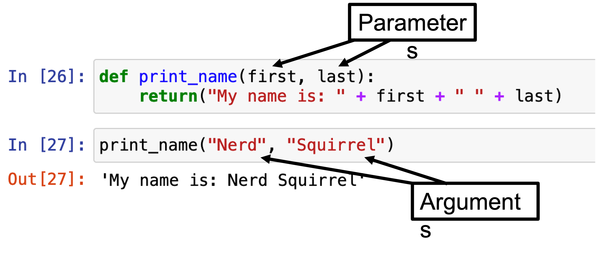

Chapter 3 - Basic Python syntax
Contents
Chapter 3 - Basic Python syntax#
2022 August 25
This chapter explains foundational Python syntax that you can reuse to accomplish many basic data creation, importing, and exporting tasks.
Variable assignment#
In Python, data are saved in variables. Variable names should be simple and descriptive.
The process is saving something in a variable is called variable assignment.
Assign a variable by typing its name to the left of the equals sign. Whatever is written to the right of the equals sign will be saved in the variable.
Save a single number inside of a variable named with a single letter. You could read the below lines as “x is defined as one”, “two is assigned to y”, or most simply put, “z is three”:
# define one variable
x = 1
# assign multiple variables in a single code cell
x = 1
y = 2
z = 3
Use print() to show it on the screen#
print(x)
1
# "call" the variables directly!
x
1
y
2
print(x / y * z)
1.5
x / y * z
1.5
Functions, arguments, and methods#
Functions, arguments, and methods form the core user framework for Python programming.
Functions: Perform self-contained actions on a thing.
Argument(s): The “things” (text, values, expressions, datasets, etc.)
Note “parameters” are the variables as notated during function definition. Arguments are the values we pass into these placeholders while calling the function.

# Example custom function
def print_name(first, last):
return("My name is: " + first + " " + last)
print_name("Nerd", "Squirrel")
'My name is: Nerd Squirrel'
Methods: Type-specific functions (i.e., can only use a specific type of data and not other types). Use “dot” notation to utilize methods on a variable or other object.
For example, you will type
gap = pd.read_csv('data/gapminder-FiveYearData.csv')to use theread_csv()method from the pandas library (imported as the aliaspd) to load the Gapminder data.
Data types#
Everything in Python has a type which determines how we can use and manipulate it. Data are no exception! Be careful, it is easy to get confused when trying to complete multiple tasks that use lots of different variables!
Use the type function to get the type of any variable if you’re unsure. Below are four core data types:
str: Character string; text. Always wrapped in quotations (single or double are fine)bool: BooleanTrue/False.Trueis stored under the hood as 1,Falseis stored as 0float: Decimals (floating-point)int: Whole numbers (positive and negative, including zero)
# 1. String data
x1 = "This is string data"
print(x1)
print(type(x1))
This is string data
<class 'str'>
# 2. Boolean data
x2 = True
print(x2)
print(type(x2))
True
<class 'bool'>
# 3. float (decimals)
# use a decimal to create floats
pi = 3.14
print(pi)
print(type(pi))
3.14
<class 'float'>
# 4. integer (whole numbers)
# do not use a decimal for integers
amount = 4
print(amount)
print(type(amount))
4
<class 'int'>
String addition versus integer addition#
# character strings
'1' + '1'
'11'
# integers
1 + 1
2
Data structures#
Data can be stored in a variety of ways. Regardless, we can index (positionally reference) a portion of a larger data structure or collection.
Python is zero-indexed!#
Python is a zero-indexed programming language and means that you start counting from zero. Thus, the first element in a collection is referenced by 0 instead of 1.
Four structures are discussed below:
Lists are ordered groups of data that are both created and indexed with square brackets
[]Dictionaries are unordered groups of “key:value” pairs. Use the key to access the value. Curly braces
{}are used to create and index dictionariesCharacter strings can contain text of virtually any length
Data Frames are tabular data organized into rows and columns. Think of an MS Excel spreadsheet!
1. List#
# Define a list with with square brackets. This list contains two character strings 'shark' and 'dolphin'
animals = ['shark', 'dolphin']
animals[0]
'shark'
# Call the second thing (remember Python is zero-indexed)
animals[1]
'dolphin'
Lists can contain elements of almost any data type, including other lists!
When this is the case, we can use multi-indices to extract just the piece of data we want. For example, to return only the element “tree”:
# Lists can contain other structures, such as other lists
# To get an element from a list within a list, double-index the original list!
animals = ['shark', 'dolphin', ['dog', 'cat'], ['tree', 'cactus']]
print(animals[3][0])
tree
Or, to just return the element “cat”:
# print this 'animals' list
print(animals)
['shark', 'dolphin', ['dog', 'cat'], ['tree', 'cactus']]
# print just the 3rd thing - the sublist containing 'dog' and 'cat'
print(animals[2])
['dog', 'cat']
# print only 'cat'
print(animals[2][1])
cat
Lists can also contain elements of different types:
# Define a heterogeneous list
chimera = ['lion', 0.5, 'griffin', 0.5]
print(type(chimera[0]))
print(type(chimera[1]))
<class 'str'>
<class 'float'>
2. Dictionary#
# Define two dictionaries - apple and orange
apple = {'name': 'apple', 'color': ['red', 'green'], 'recipes': ['pie', 'salad', 'sauce']}
orange = {'name': 'orange', 'color': 'orange', 'recipes': ['juice', 'marmalade', 'gratin']}
apple
{'name': 'apple',
'color': ['red', 'green'],
'recipes': ['pie', 'salad', 'sauce']}
orange
{'name': 'orange',
'color': 'orange',
'recipes': ['juice', 'marmalade', 'gratin']}
Combine two dictionaries into one by placing them in a list value [apple, orange], with a key named fruits. Call the key to see the value(s)!
fruits = {'fruits': [apple, orange]}
fruits
{'fruits': [{'name': 'apple',
'color': ['red', 'green'],
'recipes': ['pie', 'salad', 'sauce']},
{'name': 'orange',
'color': 'orange',
'recipes': ['juice', 'marmalade', 'gratin']}]}
To index just “juice” - under the ‘recipes’ key for the orange dictionary, combine dictionary key and list techniques to tunnel into the hierarchical structure of the dictionary and extract just what you want:
# Call the newly combined dictionary
fruits
{'fruits': [{'name': 'apple',
'color': ['red', 'green'],
'recipes': ['pie', 'salad', 'sauce']},
{'name': 'orange',
'color': 'orange',
'recipes': ['juice', 'marmalade', 'gratin']}]}
# Reference the 'fruits' key
fruits['fruits']
[{'name': 'apple',
'color': ['red', 'green'],
'recipes': ['pie', 'salad', 'sauce']},
{'name': 'orange',
'color': 'orange',
'recipes': ['juice', 'marmalade', 'gratin']}]
# Index the second thing (orange)
fruits['fruits'][1]
{'name': 'orange',
'color': 'orange',
'recipes': ['juice', 'marmalade', 'gratin']}
# Call the 'recipes' key from 'orange' to see the items list
fruits['fruits'][1]['recipes']
['juice', 'marmalade', 'gratin']
# Return the first thing from the 'recipes' key of the 'orange' dictionary inside of 'fruits'!
fruits['fruits'][1]['recipes'][0]
'juice'
Data import#
Python offers a variety of methods for importing data. Thankfully, it is quite straightforward to import data from .csv and .txt files. Other formats, such as .xml and .json, are also supported.
Below, let’s import:
Text from a .txt file
A dataframe from a .csv file
Import text data as a character string#
Import text as a single string using the open().read() Python convention.
Review your basic building blocks from above:
frankis the name of the variable we will save the text inside ofopenis the function we will use to open the text file'data/frankenstein.txt'is the argument that we provide to theopenfunction. This matches thefilepath argument and needs to contain the location for the Frankenstein book..read()reads the file as text.
frank = open('data/frankenstein.txt').read()
# print(frank)
# print only the first 1000 characters
print(frank[:1000])
The Project Gutenberg eBook of Frankenstein, by Mary Wollstonecraft (Godwin) Shelley
This eBook is for the use of anyone anywhere in the United States and
most other parts of the world at no cost and with almost no restrictions
whatsoever. You may copy it, give it away or re-use it under the terms
of the Project Gutenberg License included with this eBook or online at
www.gutenberg.org. If you are not located in the United States, you
will have to check the laws of the country where you are located before
using this eBook.
Title: Frankenstein
or, The Modern Prometheus
Author: Mary Wollstonecraft (Godwin) Shelley
Release Date: 31, 1993 [eBook #84]
[Most recently updated: November 13, 2020]
Language: English
Character set encoding: UTF-8
Produced by: Judith Boss, Christy Phillips, Lynn Hanninen, and David Meltzer. HTML version by Al Haines.
Further corrections by Menno de Leeuw.
*** START OF THE PROJECT GUTENBERG EBOOK FRANKENSTEIN ***
Frankenstein;
or, the Modern Prom
Import data frames with the pandas library#
Data frames are programming speak for tabular spreadsheets organized into rows and columns and often stored in useful formats such as .csv (i.e., a spreadsheet)
.csv stands for “comma-separated values” and means that these data are stored as text files with a comma used to delineate column breaks.
For this part, we will use the pandas Python library. Remember how to install user-defined libraries from Chapter 2? This is a two step process.
# Step 1. Physically download and install the library's files (unhashtab the line below to run)
# !pip install pandas
# Step 2. link the pandas library to our current notebook
# pd is the alias, or shorthand, way to reference the pandas library
import pandas as pd
Now, you can use dot notation (type pd.)to access the functions within the pandas library.
We want the read.csv method. Like the .txt file import above, we must provide the file path of the location of the .csv file we want to import.
Save it in the variable named gap
gap = pd.read_csv("data/gapminder-FiveYearData.csv")
# View the data
print(gap)
country year pop continent lifeExp gdpPercap
0 Afghanistan 1952 8425333.0 Asia 28.801 779.445314
1 Afghanistan 1957 9240934.0 Asia 30.332 820.853030
2 Afghanistan 1962 10267083.0 Asia 31.997 853.100710
3 Afghanistan 1967 11537966.0 Asia 34.020 836.197138
4 Afghanistan 1972 13079460.0 Asia 36.088 739.981106
... ... ... ... ... ... ...
1699 Zimbabwe 1987 9216418.0 Africa 62.351 706.157306
1700 Zimbabwe 1992 10704340.0 Africa 60.377 693.420786
1701 Zimbabwe 1997 11404948.0 Africa 46.809 792.449960
1702 Zimbabwe 2002 11926563.0 Africa 39.989 672.038623
1703 Zimbabwe 2007 12311143.0 Africa 43.487 469.709298
[1704 rows x 6 columns]
gap
| country | year | pop | continent | lifeExp | gdpPercap | |
|---|---|---|---|---|---|---|
| 0 | Afghanistan | 1952 | 8425333.0 | Asia | 28.801 | 779.445314 |
| 1 | Afghanistan | 1957 | 9240934.0 | Asia | 30.332 | 820.853030 |
| 2 | Afghanistan | 1962 | 10267083.0 | Asia | 31.997 | 853.100710 |
| 3 | Afghanistan | 1967 | 11537966.0 | Asia | 34.020 | 836.197138 |
| 4 | Afghanistan | 1972 | 13079460.0 | Asia | 36.088 | 739.981106 |
| ... | ... | ... | ... | ... | ... | ... |
| 1699 | Zimbabwe | 1987 | 9216418.0 | Africa | 62.351 | 706.157306 |
| 1700 | Zimbabwe | 1992 | 10704340.0 | Africa | 60.377 | 693.420786 |
| 1701 | Zimbabwe | 1997 | 11404948.0 | Africa | 46.809 | 792.449960 |
| 1702 | Zimbabwe | 2002 | 11926563.0 | Africa | 39.989 | 672.038623 |
| 1703 | Zimbabwe | 2007 | 12311143.0 | Africa | 43.487 | 469.709298 |
1704 rows × 6 columns
Getting help#
The help pages in Python are generally quite useful and tell you everything you need to know - you just don’t know it yet! Type a question mark ? before a funciton to view its help pages.
# ?pd.read_csv
Error messages#
Python’s learning curve can feel creative and beyond frustrating at the same time. Just remember that everyone encounters errors - lots of them. When you do, start debugging by investigating the type of error message you receive.
Scroll to the end of the error message and read the last line to find the type of error.
Helpful debugging tools/strategies:
Googling the error text, and referring to a forum like StackOverflow
(IDE-dependent) Placing breakpoints in your program and using the debugger tool to step through the program
Strategically place print() statements to know where your program is reaching/failing to reach
Ask a friend! A fresh set of eyes goes a long way when you’re working on code.
Restart your IDE and/or your machine.
Exercises#
Unhashtag the line of code for each error message below
Run each cell
Inspect the error messages. Are they helpful?
Syntax errors#
Invalid syntax error
You have entered invalid syntax, or something python does not understand.
# x 89 5
Indentation error
Your indentation does not conform to the rules.
Highlight the code in the cell below and press command and / (Mac) or Ctrl and / on Windows to block comment/uncomment multiple lines of code:
# def example():
# test = "this is an example function"
# print(test)
# return example
Runtime errors#
Name error
You try to call a variable you have not yet assigned
# p
Or, you try to call a function from a library that you have not yet imported
# example()
Type error
You write code with incompatible types
# "5" + 5
Index error
You try to reference something that is out of range
my_list = ['green', True, 0.5, 4, ['cat', 'dog', 'pig']]
# my_list[5]
File errors#
File not found
You try to import something that does not exist
# document = open('fakedtextfile.txt').read()
Exercises#
Define one variablez for each of the four data types introduced above: 1) string, 2) boolean, 3) float, and 4) integer.
Define two lists that contain four elements each.
Define a dictionary that containts the two lists from #2 above.
Import the file “dracula.txt”. Save it in a variable named
dracImport the file “penguins.csv”. Save it in a variable named
penFigure out how to find help to export just the first 1000 characters of
dracas a .txt file named “dracula_short.txt”Figure out how to export the
pendataframe as a file named “penguins_saved.csv”
If you encounter error messages, which ones?
Numeric data wrangling#
Importing numeric data from a .csv file is one thing, but wrangling it into a format that suits your needs is another. Read Chapter 4 “Numeric data wrangling” to learn how to use the pandas library to subset numeric data!
Chapter 7 contains information about preprocessing text data.